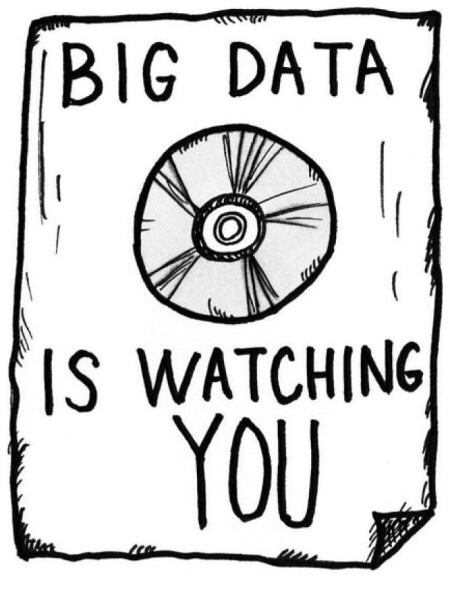
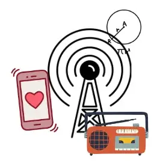

우리 일상에서 쓰이는 경우의수, 핸드폰 보안

최근에 n번방 사건에서 경찰들이 가해자들의 폰을 입수해 비밀번호를 풀어야 하는 상황이 있었다. 이때 2달정도가 소요되는 일이 있었다. 이처럼, 우리 일상에 항상 껌딱지처럼 붙어있는 스마트폰의 보안은 얼마나 안전한 것일까? 이에 대해 알아보자.
스마트폰의 보안 잠금 장치에는 여러가지 방식이있다. 숫자 잠금형이 있고, 패턴 잠금형이 있다. 먼저 숫자 잠금형의 패턴의 경우의 수를 한번 알아보자. 패턴 잠금형은 대체로 4자릿수와 6자릿수가 있다. 먼저 4자릿수의 경우의 수를 보면, 0~9까지의 수를 4번 반복하므로 10 x 10 x 10 x 10 = 10000, 6자릿수의 경우에는 10 x 10 x 10 x 10 x 10 x 10 = 1000000가지 경우의 수가 있다. 이를 1초에 한가지를 시도한다고 할떄 6자릿수의 경우에는 잠금을 해제하려면 약 278시간 정도가 소요되는 것이다.
패턴 잠금형의 경우 그 경우의 수가 더욱 복잡해진다. 패턴은 주로 9개의 점으로 구성된다. 이를 경우의 수로 나타내기 위해 아래와 같이 임의로 수를 붙여보겠다.
1 2 3
4 5 6
7 8 9
이때 2가지를 고려해야한다. 패턴은 최소 4개의 점에서 9개까지를 한번에 연결해야 하고.
일직선의 놓인 세개의 점에 대하여 가운데 점을 지나지 않고서는 양 끝점을 연결할 수 없다는 것이다.
그러면 자동으로 [2]의 경유 없이는 [1-3]을 연결 할 수 없고, [4]의 경유 없이는 [1-7]을 연결할수 없고, [5]를 미리 지나지 않고서는 대각선 형태 또는 [2-8] , [4-6]을 지날 수 없다.
먼저 1 ~ 9까지의 수중 4개에서 9개를 선택해서 나열하는 경우의 수를 구해보면,
4개를 나열 할 경우 = 9 x 8 x 7 x 6 = 3024
5개를 나열 할 경우 = 9 x 8 x 7 x 6 x 5 = 15120
6개를 나열 할 경우 = 9 x 8 x 7 x 6 x 5 x 4 = 60480
7개를 나열 할 경우 = 9 x 8 x 7 x 6 x 5 x 4 x 3 = 181440
8개를 나열 할 경우 = 9 x 8 x 7 x 6 x 5 x 4 x 3 x 2 = 362880
9개를 나열 할 경우 = 9 x 8 x 7 x 6 x 5 x 4 x 3 x 2 x 1 = 362880
이렇게 나온다. 이를 다 더해보면 985824가지가 나온다. 하지만 이중에서 2번째 규칙인 특정한 점끼리 이을 때는 특정한 점을 지나야 한다는 규칙을 무시하는 경우의 수가 있다. 이런 것을 배제시키면. 총 389112가지이다.
이렇듯 우리 휴대폰은 상당히 안전하다. 웃프게도 이런 강력한 보안장치는 우리의 사생활과 민감한 개인정보를 보호해주기도 하지만, 가끔 범죄 수사를 할떄 방해가 되기도 한다. 이때문에 각 정부의 조사기관과 핸드폰 제조사와의 갈등을 빛기도 한다.
빅데이터와 집합: 일상의 숨겨진 연결고리

요즘 우리는 빅데이터라는 말을 자주 듣습니다. 빅데이터는 'Big'(큰, 많은)과 'Data'(정보, 데이터)가 합쳐진 말로, 아주 많은 양의 정보를 뜻합니다. 4차 산업혁명 시대에 빅데이터는 매우 중요한 분야가 되었습니다. 빅데이터를 이해하려면 먼저 집합이 무엇인지 알아야 합니다. 집합은 어떤 기준에 따라 모인 대상을 말합니다. 예를 들어, 소셜 미디어 플랫폼인 틱톡, 인스타그램, 유튜브를 생각해 봅시다. 이 플랫폼들은 사용자가 좋아하는 게시물이나 팔로우하는 계정 정보를 모읍니다. 이런 정보를 사용해 비슷한 관심사를 가진 사용자 그룹을 만들고, 이를 통해 트렌드를 분석하거나 맞춤형 광고를 제공합니다. 온라인 쇼핑도 비슷합니다. 쇼핑 플랫폼은 고객의 구매 기록과 검색 패턴을 분석합니다. 이렇게 모은 정보를 통해 비슷한 제품을 산 다른 고객의 데이터를 분석하여, 고객이 좋아할 만한 제품을 추천합니다. 빅데이터는 이처럼 우리 일상에서뿐만 아니라 정치, 경제, 사회, 문화 등 다양한 분야에서 활용되고 있습니다. 그렇다면 빅데이터와 집합은 어떻게 연결될까요? 빅데이터는 많은 정보가 모인 집합입니다. 각 데이터 포인트는 집합의 요소가 됩니다. 따라서 빅데이터 분석은 집합에 대한 여러 가지 연산을 포함합니다. 예를 들어, 교집합을 찾는 것은 여러 데이터 집합에서 공통된 정보를 찾는 것이고, 합집합은 여러 데이터를 합쳐 더 큰 데이터를 만드는 것입니다. 이처럼 데이터 집합의 교집합을 통해 더 세밀한 분석을 할 수 있습니다. 부분집합과 교집합을 사용하면 데이터에서 특정 패턴이나 특성을 쉽게 찾아낼 수 있고, 의미 있는 정보를 얻을 수 있습니다. 이러한 과정은 빅데이터 분석의 핵심입니다. 빅데이터와 집합의 관계는 단순히 많은 데이터를 모으는 것을 넘어서, 그 데이터를 어떻게 잘 분석할 것인가에 대한 중요한 단서를 제공합니다. 앞으로 빅데이터가 발전하면서 집합 이론의 중요성도 더 커질 것입니다.
일상 생활속에서 집합이 사용되는 예
많은 부분에서 수학이 사용되고 있다. 그중 하나의 예시로 집합이란 개념이 있다. 집합을 활용한 대표적인 예시로는 어떠한 상황에서 특정한 물품을 구매하여야 하는 상황인데 선택하기가 어려울 때 중요한 특징들을 정리하여 물품을 특정하여 정하는 방식이 있으며 이것은 책을 살 때 여러 장르가 섞인 것을 선택하거나다른 인간들과 상호작용을 할 때, 음악 플레이리스트를 만들 때 사용할 수 있다다. 이러한 것은 일반적인 범주를 넘어서 심리와 생명에서 사용되기도 하는데 심리에서는 특정한 스트레스의 원인을 찾아 내 거나 비슷한 종류의 인간을 찾아내는 것이 있다. 생명에서는 두 생명체의 유전적 성질의 공통점과 차이점을 찾아낼 수 있으며, 특정 생태계에 분포한 공통된 생명체를 찾아내어 그 생명체의 거주 환경의 특징을 알아낼 수 있다. 이렇듯 집합은 많은 부분에서 사용이 가능하다.
구보은 카드뉴스
1. 다항식과 국제 정책 결정 과정
국제 정책 결정은 다양한 요인의 복합적 영향을 받습니다. 다항식의 사칙연산을 사용하여, 각 국가의 경제, 군사, 문화 등 여러 변수를 고려한 종합적 정책 모델을 구축할 수 있습니다. 예를 들어, A국의 경제 성장률, B국과의 무역 규모, 국내외 정치 상황 등을 변수로 설정하고, 이를 다항식으로 표현하여 특정 정책이 시행될 때의 예상 결과를 계산해 볼 수 있습니다. 이러한 수학적 접근은 복잡한 국제 관계 속에서 각 요인이 어떻게 상호 작용하는지를 명확히 분석하고, 정책 결정자가 보다 정보에 기반한 결정을 내리는 데 도움을 줄 수 있습니다.
2. 순열과 조합을 통한 선거 전략 분석
선거 전략은 다양한 요소의 조합으로 구성됩니다. 순열과 조합을 이용하여 가능한 모든 선거 결과를 탐색하고 최적의 전략을 설계할 수 있습니다. 예를 들어, 후보자가 특정 지역에서 진행할 수 있는 다양한 유세 활동의 조합을 계산하거나, 유권자 집단에 따른 맞춤형 메시지 전략을 개발할 수 있습니다. 이 과정에서 순열은 유세 순서의 중요성을, 조합은 가능한 모든 유세 조합의 효과를 분석하는 데 사용됩니다. 이러한 수학적 분석은 선거 캠페인의 효율성을 최대화하고, 예상치 못한 결과에 대비하는 전략을 수립하는 데 중요한 역할을 합니다.
실생활에서 사용되는 원의방정식

의 방정식이란 원을 표현하는 표현식으로, 원의 중심과 반지름의 길이를 이용하여 정의됩니다. (원은 평면 상의 모든 점에서 일정한 거리만큼 떨어진 점들의 집합) 원의 방정식의 예로는 교통과 통신 및 네트워크: 전파의 범위 계산, 기지국의 최적 위치 파악등이 있습니다. 첫번째로 고속도로의 곡선이 어떻게 만들어지는지 생각해봅시다. 고속도로를 만들 때는 갑자기 방향이 바뀌지 않도록 곡선을 사용해서 부드럽게 방향을 바꿀 수 있도록 설계합니다. 이런 곡선을 그리는 방법 중 하나가 바로 원의 방정식을 이용하는 것입니다. 원의 방정식을 사용하면, 고속도로가 얼마나 큰 원 형태로 꺾여야 하는지를 정확하게 계산할 수 있습니다. 두 번째로, 자동차가 도로에서 안전하게 회전할 수 있게 하는 데도 원의 방정식이 필요합니다. 차량이 도로를 따라 움직일 때, 차량의 움직임은 사실 작은 원을 그리며 회전하는 것과 비슷합니다. 이런 회전하는 움직임을 '회전 반경'이라고 하는데, 이 회전 반경을 계산하는 데에도 원의 방정식을 활용합니다. 이렇게 계산한 회전 반경을 통해 도로나 교차로를 얼마나 넓게 만들어야 하는지를 알 수 있습니다. 그렇다면 통신과 네트워크에서 원의 방정식이 어떻게 사용될까요? 우리가 휴대폰이나 무선 인터넷 같은 것을 사용할 때, 이런 신호는 기지국이나 중계국에서 전파되어 우리의 기기까지 도달합니다. 이 때, 이 전파는 기본적으로 원형으로 퍼져나가게 돼죠. 이 말은, 기지국이나 중계국에서 전파가 퍼져나가는 범위를 파악하고자 한다면 원을 떠올려 보면 된다는 의미입니다. 그런데 모든 곳에 기지국이나 중계국을 세울 수는 없으니, 어디에 설치를 해야 전파를 가장 효과적으로 보낼 수 있을지 결정해야 합니다.. 이런 때 원의 방정식을 이용하면 도움이 돼죠. 원의 방정식을 이용해 원의 크기, 즉 전파가 도달할 수 있는 범위를 계산하고, 이 정보를 바탕으로 기지국이나 중계국을 어디에 세울지 결정할 수 있습니다. 그래서 통신과 네트워크에서는 원의 방정식을 이용해 전파의 범위를 계산하고, 기지국이나 중계국의 위치를 최적화하는데 사용합니다. 이런 식으로 원의 방정식을 활용하면 통신이 더 효율적으로 이루어질 수 있게 되는 것입니다 많은 사람들이 원의 방정식을 단지 수학적 개념이라고 생각할 수 있지만 실제로는 이것이 우리의 세상을 이해하고 모양을 만들어가는 데 매우 중요한 역할을 하는 것을 알 수 있었습니다. 따라서, 원의 방정식을 학습하고 이해하는 것은 단순히 수학적 지식을 넘어서서 실생활에서의 문제 해결 능력을 향상시키는 데에도 큰 도움이 됩니다. 이를 통해 우리는 우리 주변의 세상을 더 잘 이해하고, 더욱 효과적으로 대응할 수 있게 될 것입니다.